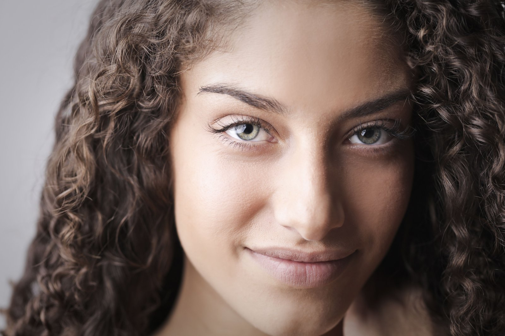

Virtual makeup that keeps your skin’s texture.
Carmine paints lipstick, eyeshadow, liner, brows, blush and highlighter onto your face, live, through your camera. It changes the colour but keeps your skin’s own texture, so it reads as makeup rather than a sticker. Everything runs in this tab; nothing is uploaded.

Your browser asks before the camera turns on.
How it works
The same four steps run on every camera frame, in the time between one frame and the next. The pictures are drawn by the engine, live in your browser, from the sample photo above.
-
1Find the face
A face landmark model finds 478 points on your face. Everything after this is placed from those points and scaled to the distance between your eyes.
-
2Draw soft masks
Lips, lids, lash line, brows, cheeks and highlights each get a soft-edged shape. The edges soften in proportion to your face, so they stay soft as you lean in.
-
Flat fillCarmine
3Change the colour, keep the texture
Colour is changed in CIELAB, where lightness is separate from hue. A flat fill paints over the lip; Carmine moves the colour and keeps the lip’s own light and shadow.
Average change in lip brightness over 26 portraits Flat fill 45.7Carmine 13.2On the 0–255 lightness scale. Lower keeps more of the real lip.
-
4Paint it in one pass
All six products are drawn in a single pass on your graphics card. The whole pipeline takes 26.6 ms a frame on an Apple M1 Pro laptop, about 37.6 frames a second.
The full benchmark compares Carmine with four common shortcuts on every measure, including the two it loses on.
Your face never leaves this tab.
No server does the work. The page downloads its files from this site, and from then on everything happens on your device.
-
Runs on your device
The face model and the colour maths run in your browser, on your own graphics card.
-
Nothing is uploaded
Camera frames go to the screen and nowhere else. Save photo downloads a PNG to your device, and that is the only copy.
-
Check it yourself
Once the mirror is running, turn off your Wi-Fi. It keeps working, because it no longer needs the network.